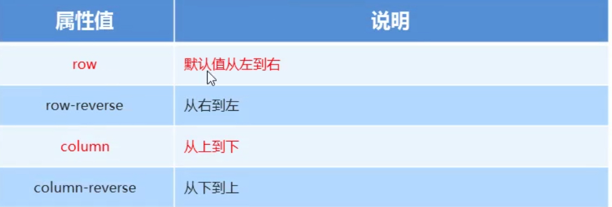
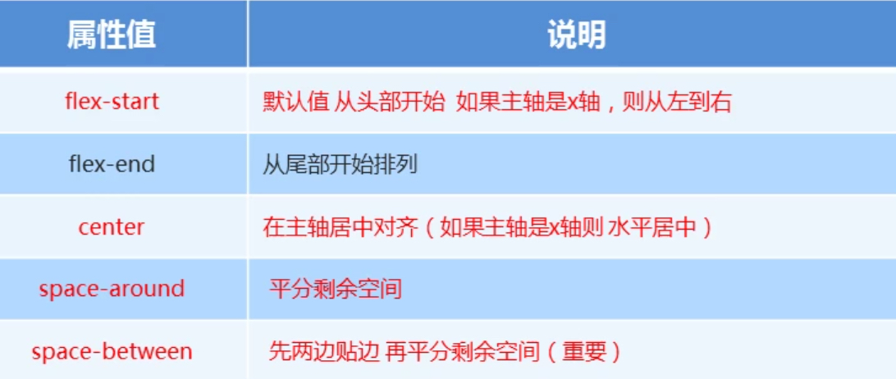
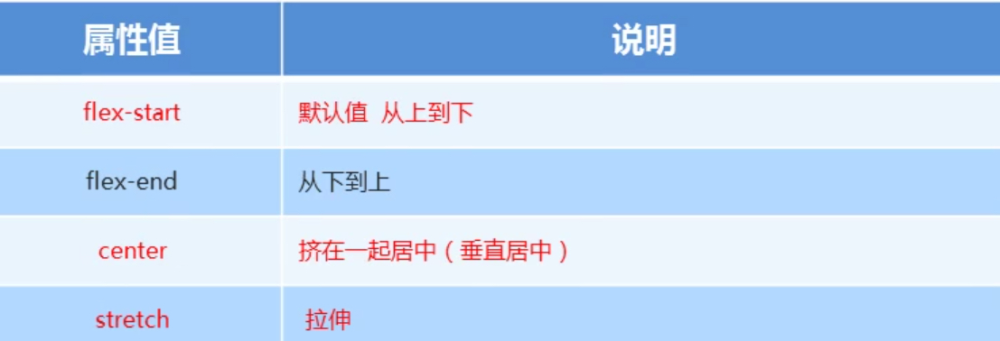
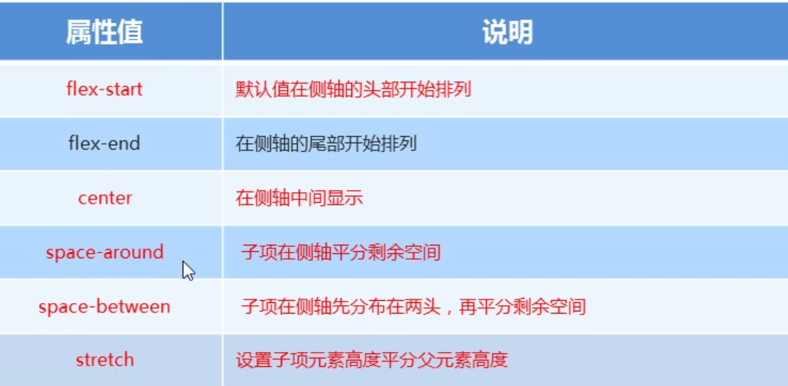

flex布局
1. flex布局体验
1.1 传统布局与flex布局
传统布局
- 兼容性好
- 布局繁琐
- 局限性，不能在移动端很好的布局
flex布局
- 操作方便，布局极为简单，移动端应用广泛
- PC端浏览器支持情况较差
- IE11或更低版本，不支持或仅部分支持
建议：如果是PC端页面布局，还是采用传统布局；如果是移动端或不考虑兼容性的PC端页面布局问题，采用flex弹性布局
注意：display：flex;给父盒子添加
1
2
3
2. flex布局原理
flex是flexible box的缩写，意为“弹性布局”，用来为盒装模型提供最大的灵活性，任何一个容器都可以指定为flex布局。
注意：当我们为父盒子设定为弹性布局后，子元素的float，clear，vertical-align属性将失效；
采用Flex布局的元素，称为Flex容器，简称容器，它的所有子元素自动成为容器成员，称为Flex项目，简称项目。
总结：通过给父盒子添加flex属性，来控制子盒子的位置和排列方式。
3. flex布局父项常见属性
3.1 常见父项属性
- flex-direction：设置主轴方向
- justify-content：设置主轴上的子元素的排列方式
- flex-wrap：设置子元素是否换行
- align-content：设置侧轴上的子元素的排列方式（多行）
- align-items：设置侧轴上的子元素的排列方式（单行）
- flex-flow：复合属性，相当于同时设置了flex-direction和flex-wrap
3.2 flex-direction设置主轴方向（重点）
3.2.1 主轴与侧轴
主轴与侧轴，又叫行和列，x轴和y轴
- 默认主轴的方向就是x轴方向，水平向右
- 默认侧轴的方向就是y轴方向，垂直向下
3.2.2 属性值
flex-direction属性决定主轴的方向
注意：主轴和侧轴会变化，看flex-direction设置谁为主轴，剩下的就是侧轴，子元素是跟着主轴来排列的

3.3 justify-content设置主轴上的子元素的排列方式（重点）
注意：使用这个属性前先要设置好主轴方向

1
2
3
4
3.4 flex-wrap设置子元素是否换行（重点）
默认情况下，项目都排列在一条线上。flex-wrap属性定义flex布局中默认不换行。如果装不下，会缩小子元素的宽度，放到父元素中，可以通过更改flex-wrap: wrap;换行
3.5 align-items：设置侧轴上的子元素的排列方式（单行）（重点）
该属性是控制子元素在侧轴（默认是y轴）上的排列方式，在子元素为单项的时候使用

1
2
3
3.6 align-content设置侧轴上的子元素的排列方式（多行）
设置子项在侧轴的排列方式，并且只能适用子项出现换行的情况，在单行下是没有效果的

1
2
3
4
5
6
7
8
9
10
11
12
3.7 flex-flow：flex-direction和flex-wrap的复合属性
flex-direction: column;
flex-wrap: wrap;
=
flex-flow: column wrap;
4. flex布局子项常见属性
- flex子项占的份数
- align-self控制子项自己在侧轴的排列方式，若给父盒子添加align-items则整体都移动，align-self可以控制单个
- order属性定义子项的排列顺序（前后顺序）默认是0，越小越靠前